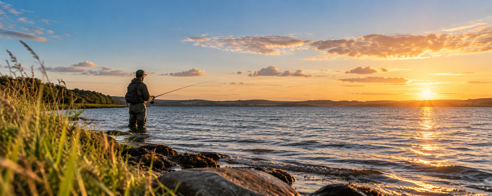
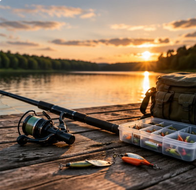
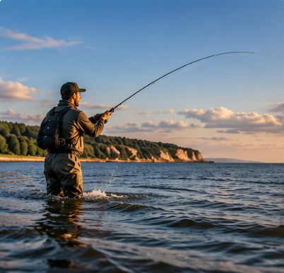
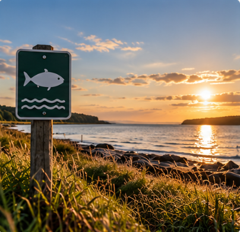

VELKOMMEN TIL COOLBASS
Kom i gang med lystfiskeri
En enkel guide til dig, der gerne vil prøve lystfiskeri, men ikke ved, hvor du skal begynde.
NY TIL LYSTFISKERI?
Det behøver ikke være svært at komme i gang.
Lystfiskeri kan virke uoverskueligt, når man er ny. Hvilken stang skal man vælge? Hvilket grej har man brug for? Og hvor må man egentlig fiske?
CoolBass hjælper dig gennem det grundlæggende, så du kan bruge mindre tid på at være forvirret og mere tid ved vandet.
GUIDES TIL DIG DER ER NY
Alt du skal bruge for at komme i gang



DIT NÆSTE EVENTYR STARTER HER
Klar til dit første kast?
Du behøver ikke være ekspert for at nyde en dag ved vandet. Tag det første skridt, lær det grundlæggende, og oplev glæden ved lystfiskeri.
Kom i gang →